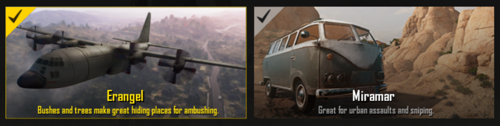

Each game mode can be played in solo, duo, squad, etc and will be matched independently.It depends on the player on what perspective he/she wants to play in FPP(First Person Perspective) or TPP(Third Person Perspective).
Go back to homepage,
<- Back